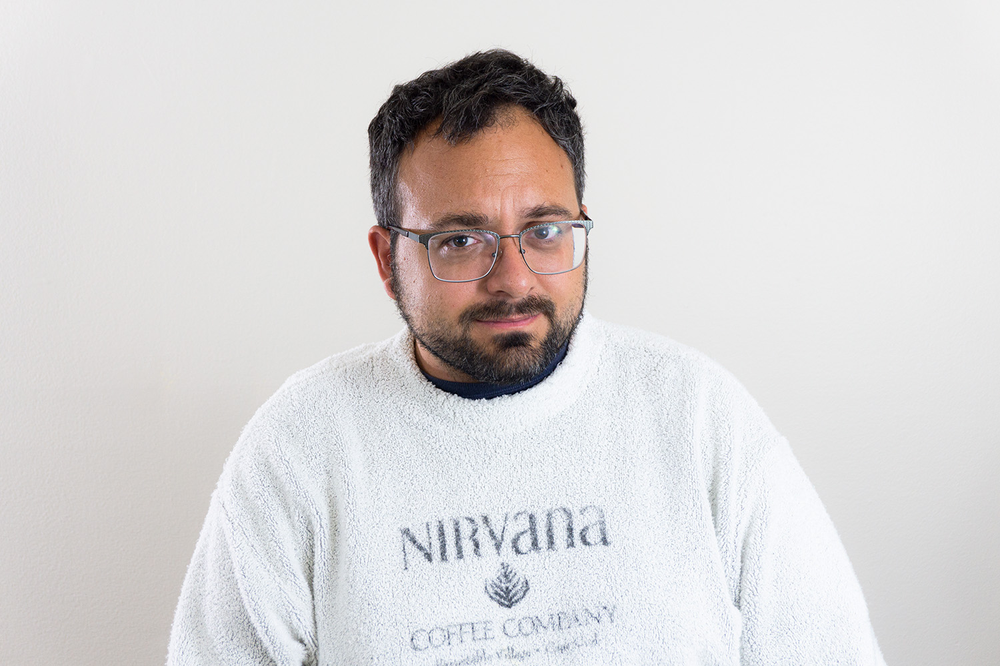

I work with data professionally and teach the basics of programming and Computer Science. I'm interested in applying data science to raw data, often from web scraping, to find meaningful information. Before getting jobs working with data and teaching, I spent over 8 years working full-time serving individuals with severe mental illness and seniors with disabilities, especially forms of dementia.

From 2012 to 2020 I worked full-time in human services, directly helping people with mental illness find work and further their education, and helping to provide enrichment for seniors at a day care and a nursing home. In addition to direct service, I was also a manager for a few years and in most of my roles there were some technical elements (see career timeline for details).
In spring and summer of 2020, during the heart of the first wave of the COVID-19 pandemic, I was the only remaining recreation staff working in the "memory care unit" of a nursing home. I helped the nursing home acquire and manage a number of iPads and Kindle Fires to allow individuals to talk with their families. In my unit, memory care, individuals needed me to facilitate the whole call, as many were cognitive impaired, and often nonverbal.
I tried to make sure families had as much communication as possible with their loved ones in memory care: Since there was a very high mortality rate at that point in the pandemic, among that demographic group, it was my chance to make a difference. I resigned in September of 2020, when pandemic seemed to be receding and enrolled in Pace's graduate program in Computer Science starting spring 2021.I completed the degree in 2023 with a 4.0 and started jobs in data management and teaching in January of 2025.
Click here to see a more detailed career timeline
I graduated from UConn in May 2011 with a Bachelor's in General Studies. In November 2011 I started working at a small security company while volunteering as a computer instructor working with individuals with severe mental illness.
In June 2012, I was hired full-time at Laurel House, the mental health service provider where I was volunteering. I spent 3 years helping individuals with mental illness learn computer skills, in addition to find jobs and go to school. I also helped preparing and designing marketing materials with Adobe Creative Suite, including an annual report. I helped maintain and make and modify objects in the Salesforce database. I wrote Apex code in SalesForce to help the organization upload monthly data to a state database. I left working full time in February 2015, but continued to do database design work per diem until 2018.
In February of 2015 I was hired at River House, an adult day care which focused on providing a safe and enriching place for seniors with disabilities, particularly in memory and cognation. As a direct service recreation staff, I spent most of my time running group activities (news, word games, reminiscencing, gardening, exercise), aiding on trips and helping out seniors individually. In October 2017 I became manager of the Recreation team, where I coordinated 2 full-time staff and 1 part-time staff, and planned almost all activities and trips. I left in June 2019 to start a job at Wilton Meadows nursing home.
From June of 2019 I worked at Wilton Meadows Nursing home as a Therapeutic Recreation Specialist in the memory care unit. Before COVID-19, I spent my time hosting activities like news, word games, reminiscencing, gardening and exercise with the memory care unit. I also decorated the unit, helped with feeding those who couldn't feed themselves, purchased new materials, helped plan new activites and helped CNAs whenever I could.
When COVID-19 began in March of 2020, family was prohibited from visiting the nursing home and a signficant number of people got sick. Providing communication for the memory care unit became core to my job, although I still tried to provide as much therapeutic stimulation as a could. More detail is in the box above about this time. When pandemic seemed to be receding in September 2021 I resigned and enrolled I in Pace's graduate program in Computer Science starting spring 2021.